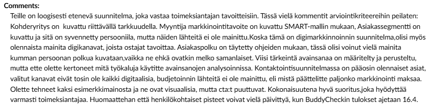
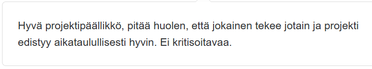
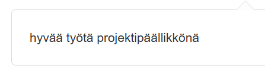
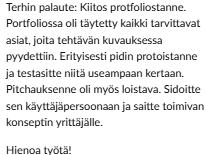
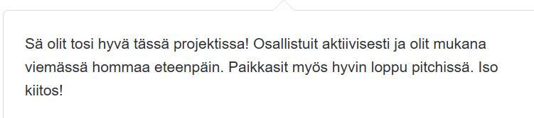
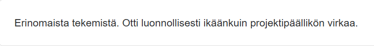
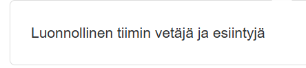
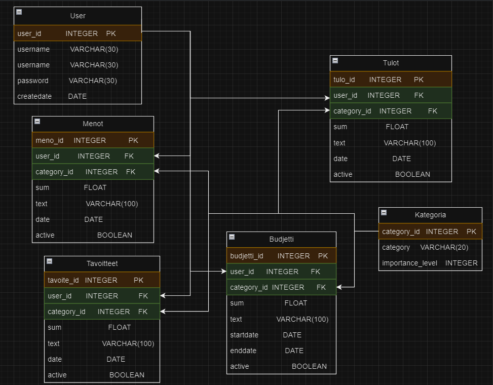

Olen tehnyt paljon vapaa-ajan projekteja kouluprojektien lisäksi!
Tässä alla on muutamia projekteja, joista olen ylpeä.
Rakensin Discord-botin itse Pythonilla. Käytin apuna tekoälyä ja Youtubea. Valmiiksi hyvä Python-osaamiseni oli myös avuksi.
Botilla pystyy pelaamaan esimerkiksi Wordle-peliä, Triviaa ja hirsipuuta. Discord-botti tunnistaa sekä tavallisia viestejä että myös slash-komentoja.
Botti pystyy myös kertoa vitsejä, vastata käyttäjille ja heittää esimerkiksi noppaa! Botti on jatkuvasti päällä ja se on hostattu Githubin Railway-applikaatiossa.
Botin koodissa käytin apuna Discord.py-kirjastoa, joka helpottaa botin tekemistä. Botin koodi on Githubissa, mutta se ei ole kaikille avoin tietoturvasyistä.
Alla on vielä videoita Discord-Botin toiminnoista!
Olen tehnyt muutamia nettisivuja, joissa olen käyttänyt HTML:ää, CSS:ää ja Bootstrapin elementtejä. Osaan myös hyödyntää tekoälyä tehokkaasti.
Tämän nettisivun olen tehnyt vapaa-ajalla omana projektinani. Tässä olen käyttänyt HTML:ää, CSS:ää ja Bootstrapin elementtejä, Hyödynsin myös tekoälyä ideoinnissa ja debuggailussa.
Olen myös tehnyt nettisivuja kouluprojekteina, esimerkiksi Verkkosivujen kehittäminen-kurssilla luotiin monisivuiset nettisivut, jossa on hyvä käytettävyys, hyvä visuaalisuus ja käytetty monipuolisesti HTML:ää, CSS:ää ja Bootstrapia.
Nettisivun koodi löytyy GitHubista repositoriosta nimeltä fribasivu
Digital Marketing and Sales-kurssilla teimme ryhmätyönä digimarkkinointisuunnitelman. Ryhmässä otin paljon vastuuta ja johdin projektia.
Projektissa loimme digimarkkinointisuunnitelman toimeksiantajalle, jossa suunnittelimme markkinointistrategian, kohderyhmän, markkinointikanavat ja budjetin.
Projektissa käytimme myös erilaisia digimarkkinoinnin työkaluja, kuten Google Analyticsia ja sosiaalisen median kanavia.
Projektin lopputuloksena syntyi digimarkkinointisuunnitelma, jota esittelimme opettajalle. Portfoliota en voi näyttää tietoturvasyistä.
Alla on vielä palautetta opettajalta ryhmän portfoliosta ja ryhmän muilta jäseniltä omasta panoksestani.



Service Design-kurssilla teimme projektiviikolla palvelumuotoiluprojektin Vantaan kaupungille. Ryhmätehtävässä otin paljon vastuuta ja johdin projektia.
Projektissa loimme raakadatan pohjalta prototyypin innovaatiokiihdyttämölle, joka auttaa yrityksiä löytämään uusia innovaatioita ja jalostamaan omia ideoita.
Innovaatiokiihdyttämö myös tarjoaa oppilaitoksille mahdollisuuksia tehdä yhteistyötä muiden yritysten kanssa ja tarjota myös harjoittelupaikkoja opiskelijoille.
Projektissa käytimme palvelumuotoilun menetelmiä, kuten asiakaspolkuja, käyttäjätutkimusta ja prototyyppien luomista.
Projektin lopputuloksena syntyi prototyyppi, jota esittelimme Vantaan kaupungin edustajille. Portfoliota en voi näyttää tietoturvasyistä.
Alla on vielä palautetta opettajalta ryhmän portfoliosta ja ryhmän muilta jäseniltä omasta panoksestani.




Teimme Tiedonhallinta ja tietokannat-kurssilla tietokantaprojektin, jossa rakensimme MariaDB:seen tietokannan ja keräsimme tietoja sieltä erilaisilla SQL-kyselyillä.
Projektissa sunniteltiin tietokannan rakenne ja luotiin taulut, joissa oli erilaisia tietoja. Tietokannan avulla pystyimme hakemaan tietoja nopeasti ja tehokkaasti.
Projektissa käytimme myös SQL-kyselyitä, joilla pystyimme hakemaan tietoja tietokannasta ja muokkaamaan niitä.
Alla näkyy luomamme suunnitelma. Komennot löytyvät GitHubista repositoriosta budgetbro-tietokanta
